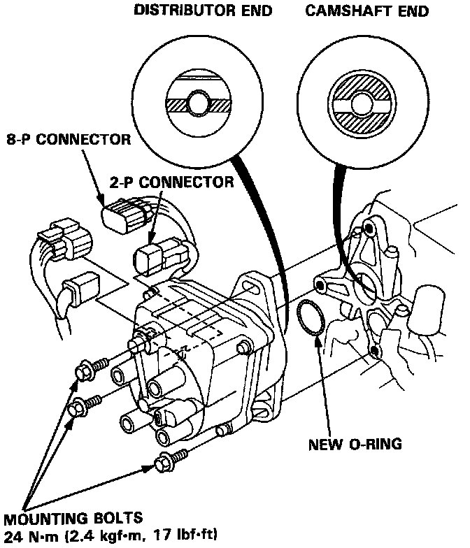
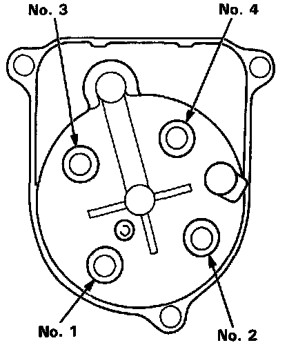
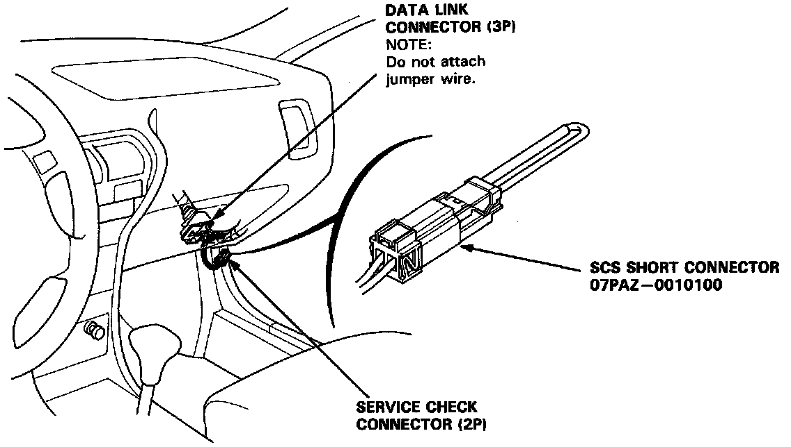

Installation
Distributor Installation:

1. Coat a new O-ring with engine oil then install it.
2. Slip the distributor into position.
NOTE: The lugs on the end of the distributor and its mating grooves in the camshaft end are both offset to eliminate the possibility of installing the distributor 180° out of time.
3. Install the hold-down bolts and tighten temporarily.
4. Connect the 2-P and 8-P connectors to the distributor.
Spark Plug Wire Arrangement:

5. Connect the spark plug wires as shown.
DLC & SCS Connector Locations:

Timing Mark Location:

CAUTION: Do not short any of the pins on the 3 pin Data Link Connector together or to ground.
6. Install a shorting connector at the 2 pin Service Check Connector and set the timing with a timing light to 15° ± 2° BTDC @ 750 ± 50 rpm (red line on crank pulley). Remove the shorting connector from the Service Check Connector.
7. After adjusting, torque the hold-down bolts, then install the cap on the bolt.
Torque: 18 Nm (13 ft lb)